34/91 PNG générés.
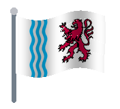
Nouvelle-Aquitaine
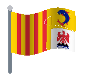
Provence-Alpes-Côte-d'Azur
Île-de-France
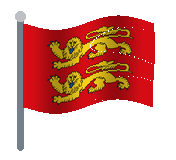
Normandie
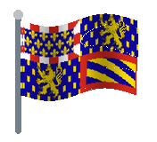
Bourgogne-Franche-Comté
Centre-Val-de-Loire
Haut-de-France
Ceuta
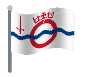
Great London
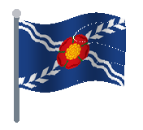
North West (ENG)
West Midlands (ENG)
Yorkshire And The Humber
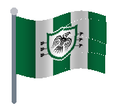
East Midlands (ENG)
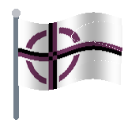
South East (ENG)
North East (ENG)
South West (ENG)
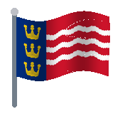
East of England
West Central Scotland
Southern Scotland
North Eastern Scotland
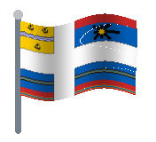
Highlands and Islands (SCO)
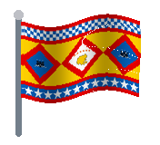
Eastern Scotland
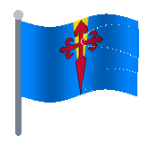
Área Metropolitana de Lisboa
Centro (POR)
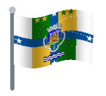
Norte (POR)
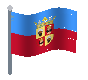
Algarve
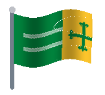
Alentejo
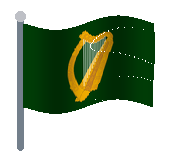
Leinster
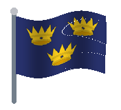
Munster
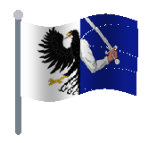
Connacht
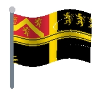
West Wales and the Valleys
East Wales
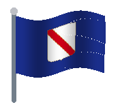
Campania
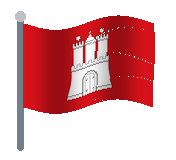
Hamburg